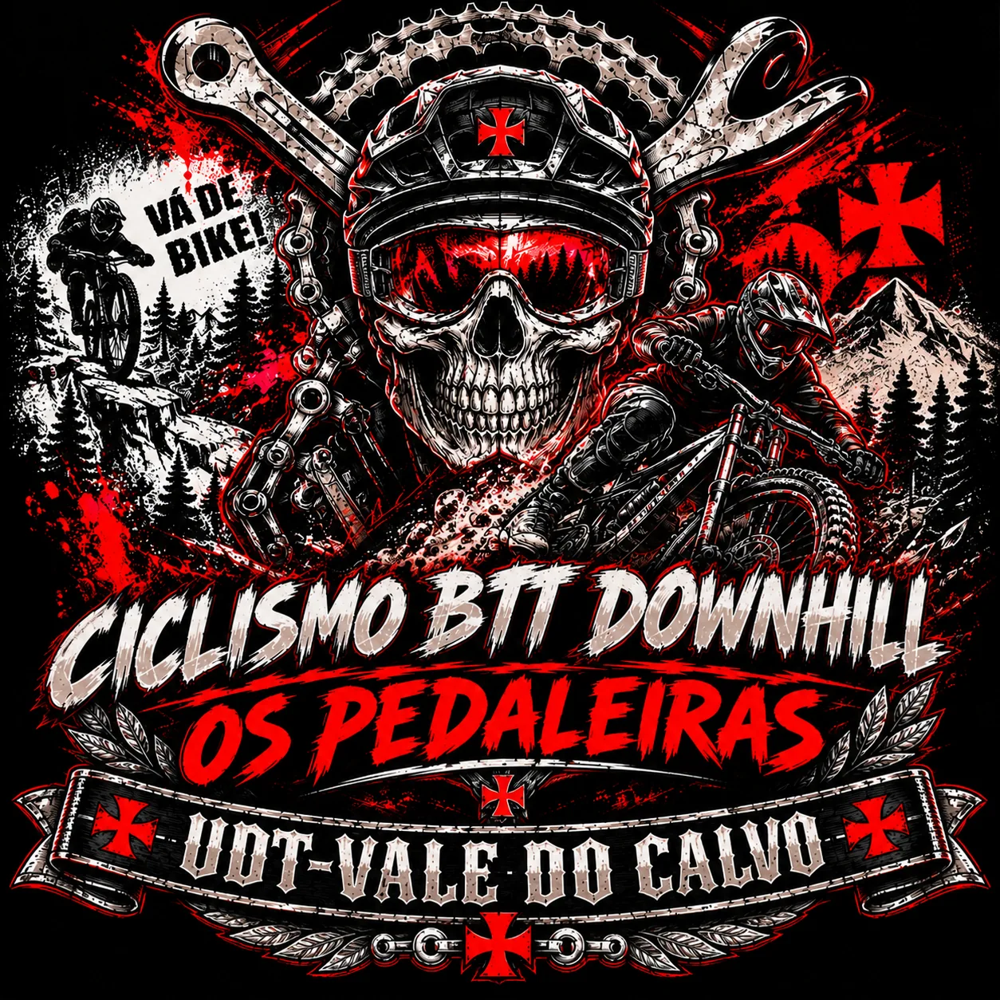
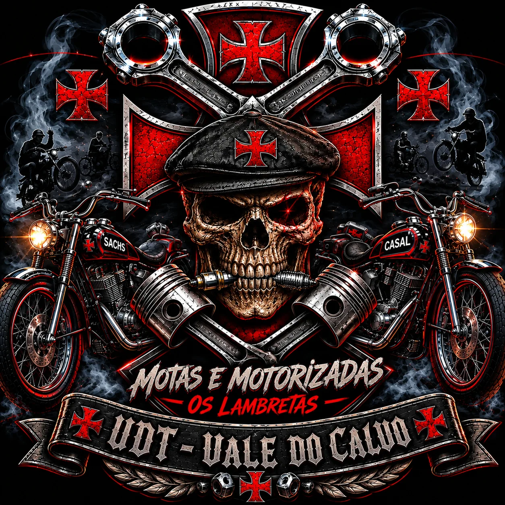
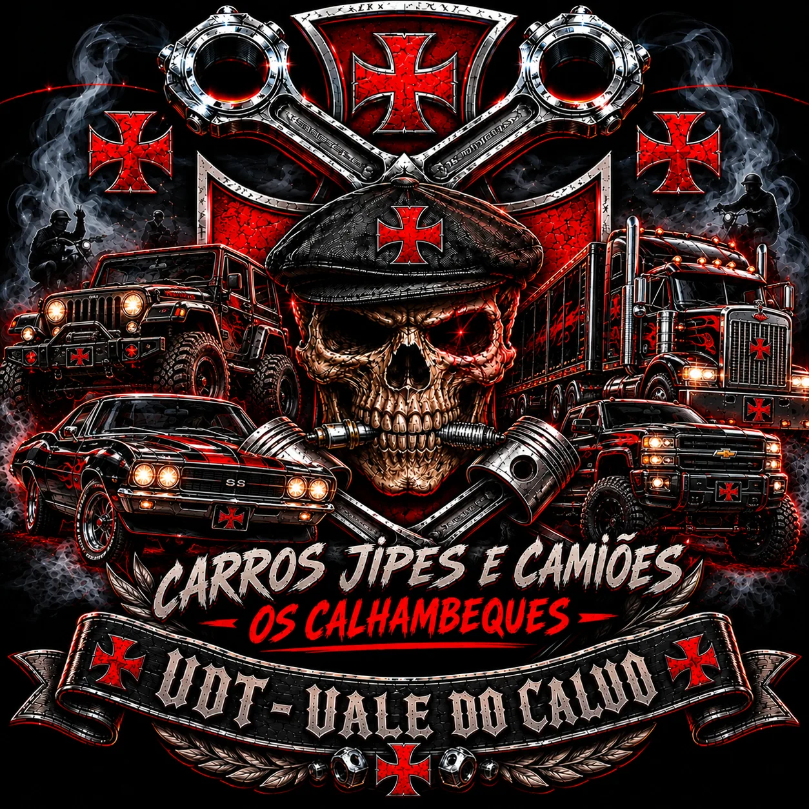
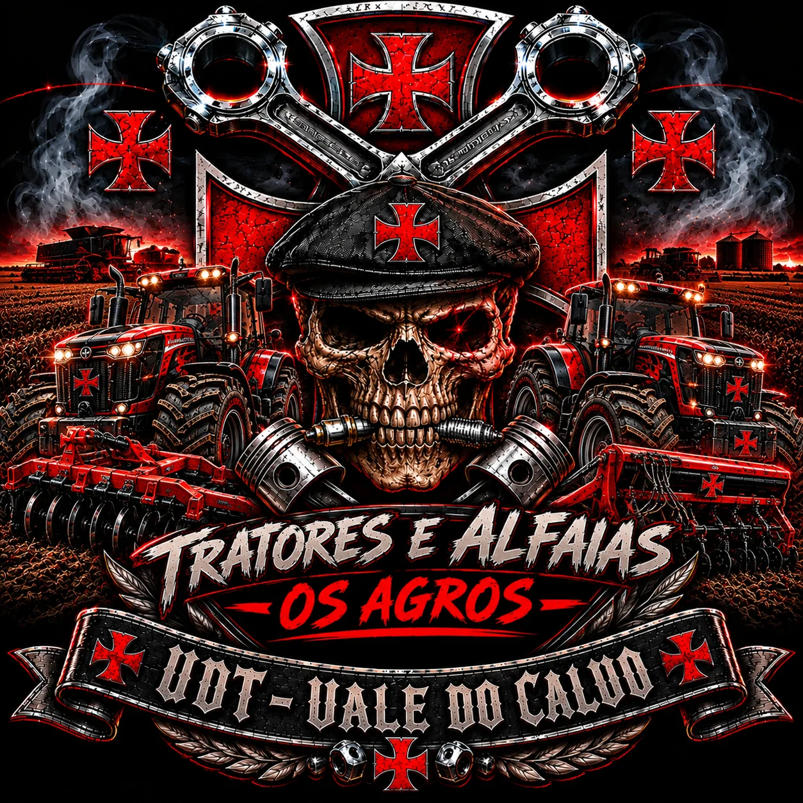
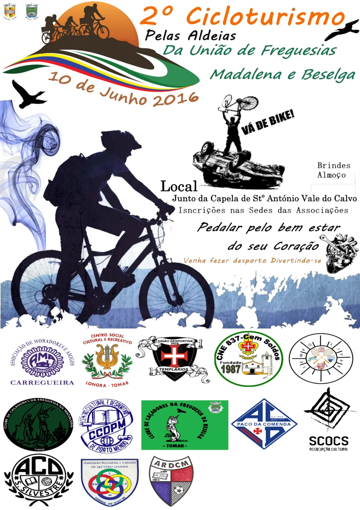
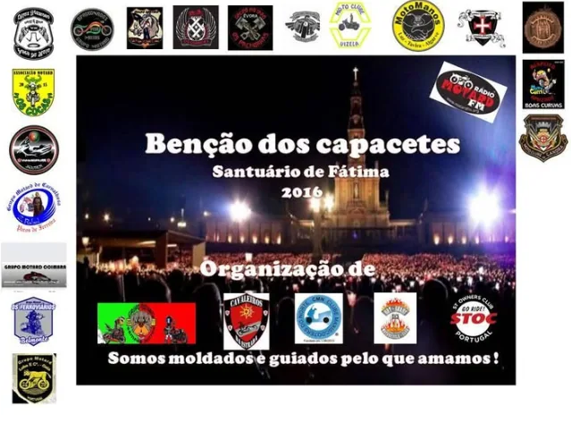
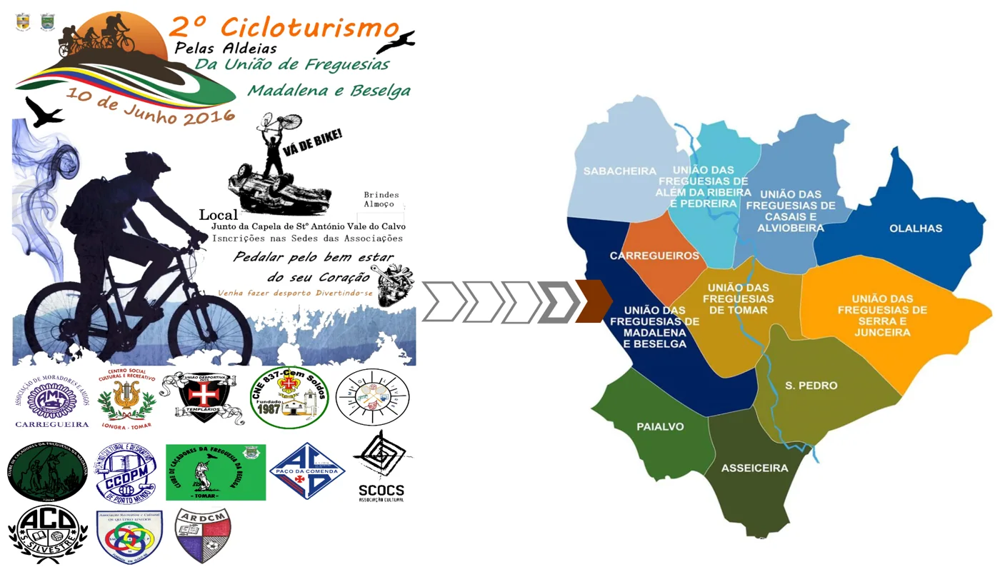
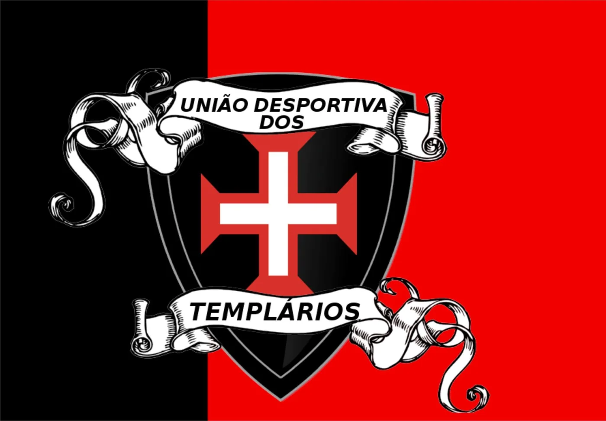

Nasce o projeto UDT
Um grupo de entusiastas do desporto dá início a um projeto comunitário em Vale do Calvo.
Desde 13 de junho de 2013
Um projeto nascido da amizade, da paixão por todas as modalidades desportivas e da vontade de fazer mais pela nossa terra.

Em 13 de junho de 2013, um pequeno grupo de amigos, apaixonados pelo desporto nas suas mais diversas formas, iniciou o projeto da União Desportiva dos Templários – Vale do Calvo.
O propósito era criar uma associação aberta à comunidade, onde o ciclismo, as motorizadas, o motociclismo, os desportos motorizados, a cultura e o convívio pudessem encontrar um ponto de encontro. O nome homenageia a ligação histórica da região de Tomar ao imaginário templário e afirma o vínculo a Vale do Calvo.
O percurso tem sido marcado por dificuldades administrativas e pela insuficiência de apoio institucional sentida pelos promotores. A formalização legal tem sido um objetivo persistente, mas os obstáculos não apagaram a memória das iniciativas realizadas nem a vontade de continuar.
“O sonho nasceu em 2013. A união mantém-no vivo.”
Um grupo de entusiastas do desporto dá início a um projeto comunitário em Vale do Calvo.
Participação na iniciativa da União de Freguesias de Madalena e Beselga, com ponto de encontro junto à Capela de Santo António, em Vale do Calvo. O emblema da UDT consta do cartaz histórico.
Presença do emblema da UDT no cartaz da Bênção dos Capacetes, no Santuário de Fátima.
Segundo a memória dos promotores, a UDT participou na Festa Templária de Tomar com um espaço de restaurante e bar.
Recolha de cartazes, testemunhos e documentos e continuação do esforço para consolidar o projeto associativo.
Estas imagens representam vertentes e grupos temáticos da identidade visual da UDT. Não significam, por si só, que existam secções formalmente constituídas.

Ciclismo, BTT, atividade física e contacto com a natureza.

Motorizadas clássicas, motos e cultura das duas rodas.

Automóveis, jipes, camiões e património motorizado.

Tratores, máquinas agrícolas e tradições do mundo rural.
Cartazes e imagens fornecidos pelos promotores, apresentados como documentos de arquivo.




Queremos desenvolver um projeto associativo plural, responsável e aberto a todas as gerações, que promova o desporto, preserve as tradições e valorize Vale do Calvo e a região de Tomar.
A UDT continua a defender uma oportunidade justa de concretizar a sua missão, com transparência, participação e colaboração comunitária.
Voltar ao início ↑Inscreve-te como sócio, atleta ou ambos. Podes selecionar uma ou várias modalidades. A inscrição fica sujeita à confirmação pela associação.
Os valores apresentados pressupõem uma primeira inscrição com joia de 5 € e quota anual de 12 €; nos anos seguintes, a quota anual indicada é de 12 €. Estes valores são os indicados pelos promotores da UDT. Não é feito qualquer pagamento neste site. A aceitação, eventual enquadramento desportivo e pagamento serão confirmados pela associação.
Privacidade: esta versão gratuita não possui base de dados nem envia os dados automaticamente. O formulário prepara uma mensagem no teu dispositivo e abre o teu programa de email para enviares o pedido a u.d.templarios@gmail.com. O envio só acontece quando o confirmares no teu email. Não introduzas NIF, número de identificação, morada ou dados de saúde neste formulário. Consulta a informação de privacidade.
Para pedidos de inscrição, informações sobre modalidades, colaboração ou iniciativas comunitárias, contacta-nos por email.
As mensagens são recebidas pela associação através da caixa de correio indicada.
Enviar email →